Fundamentos de Redes
As redes de computadores são a espinha dorsal da comunicação digital moderna, conectando dispositivos e pessoas em todo o mundo.
Redes de Computadores
Conceitos | Protocolos | Arquitetura | AplicaçõesRedes de Computadores são conjuntos de dois ou mais dispositivos interconectados que compartilham recursos e trocam informações. Dispositivos como computadores, smartphones, servidores, roteadores e switches comunicam-se digitalmente.
As redes permitem compartilhamento de arquivos, impressoras, acesso à internet e execução de aplicações colaborativas. Classificam-se por tamanho (LAN, MAN, WAN), meio de transmissão (cabeadas ou wireless) e topologia (estrela, anel, barramento).
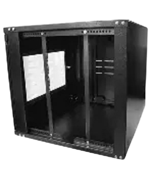
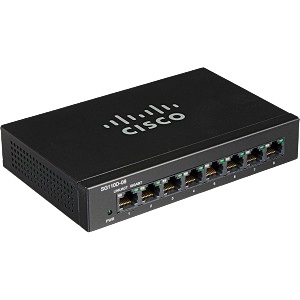
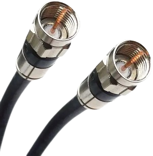
Internet, Web e Rede Mínima
Rede Mínima
Dois dispositivos + meio de conexão + protocolo de comunicação. Exemplo: conexão ponto a ponto via cabo crossover ou Wi-Fi ad-hoc.
Internet
Rede global de redes usando TCP/IP. Composta por Backbone, ISPs, Data Centers, Roteadores, Cabos submarinos.
Web vs Internet
Internet = infraestrutura física/lógica. Web = conteúdo (sites, páginas) que trafega sobre essa infraestrutura.
Mapa Global de Fibra Óptica
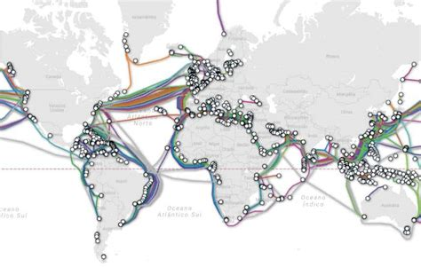
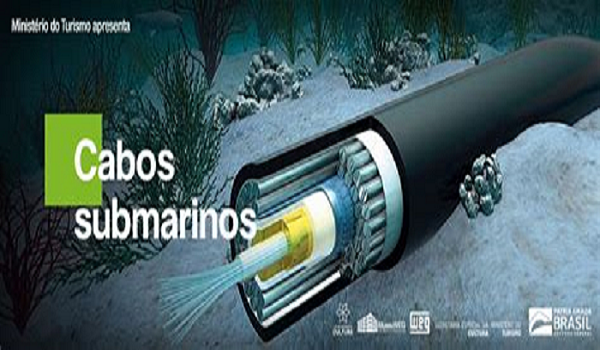
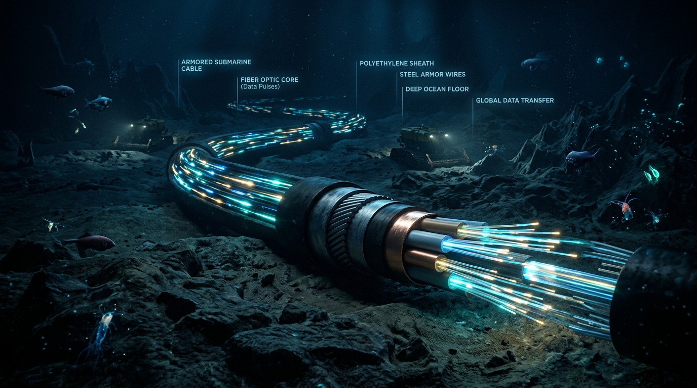
Componentes de Hardware de Rede
Exemplificação | Funcionalidade | UtilizaçãoRede Wi-Fi
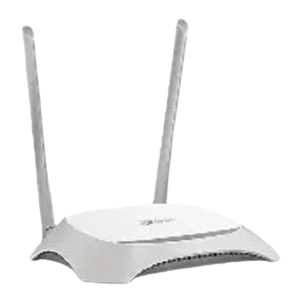
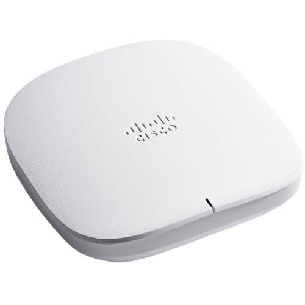
Rede Cabeada
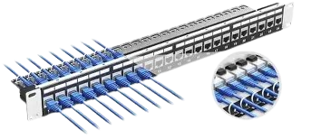
Segurança & Fibra Óptica
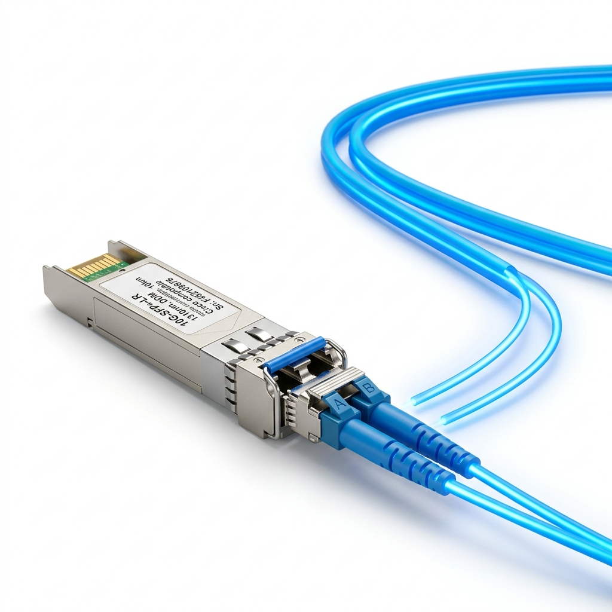
Protocolos de Comunicação
OSI | TCP/IP | HTTP | HTTPS | IPv4 | IPv6Um protocolo de comunicação é um conjunto de regras que define como os dispositivos trocam informações em uma rede, especificando formato, sequência de mensagens, detecção de erros e endereçamento.
Modelo OSI vs TCP/IP
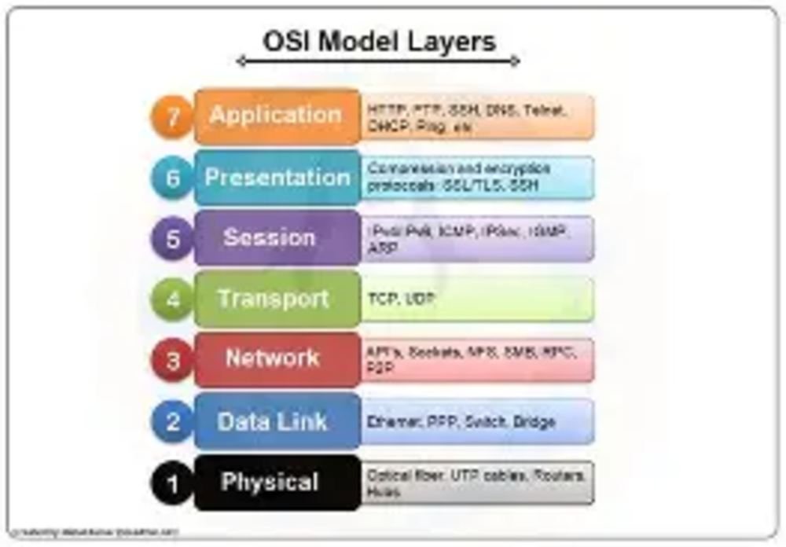
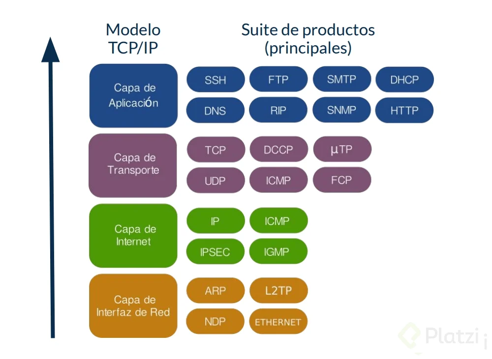
IPv4 vs IPv6
32 bits · 4.3 bilhões
192.168.0.1
128 bits · 3.4×10³⁸
2001:db8::1
HTTP vs HTTPS
HTTP — Porta 80, stateless, métodos GET/POST/PUT/DELETE
HTTPS — Porta 443, usa TLS/SSL, garante confidencialidade, integridade e autenticação.
const net = require('net');
const server = net.createServer((socket) => {
console.log('Cliente: ' + socket.remoteAddress);
socket.write('Bem-vindo!\r\n');
socket.on('data', (data) => console.log('Recebido: ' + data));
});
server.listen(8080, '0.0.0.0', () => console.log('Servidor TCP na porta 8080'));